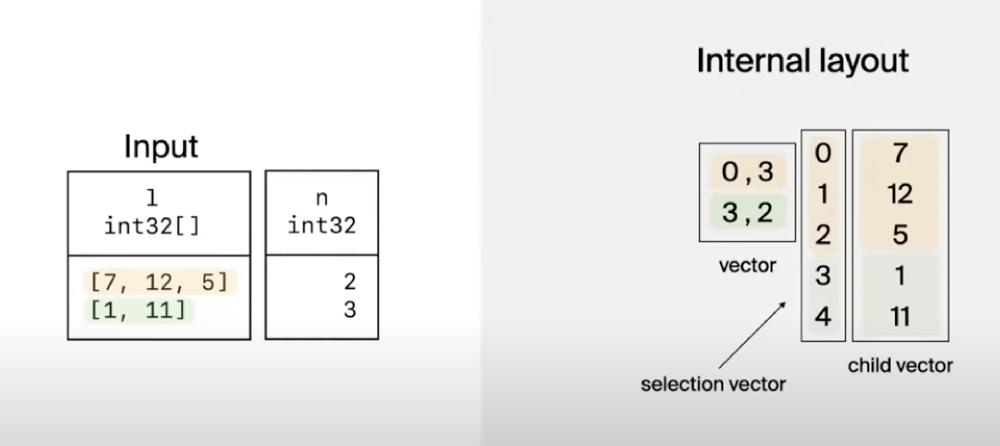
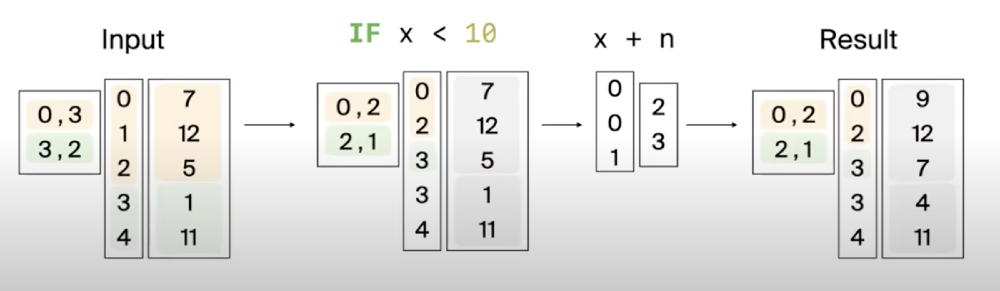

- Tania is a software engineer at DuckDB Labs. She previously interned at CWI.
- DuckDB in a nutshell: Analytical database, In-process, Written in C++
Nested Data
- Relevance of nested data & lambdas
- Nested inputs like JSON and Lists are common
- Aggregation aren’t intuitive on nested structures
- Un-nesting data
- Recent example: https://til.simonwillison.net/duckdb/remote-parquet
-- reading data from multiple parquet files stored elsewhere using DuckDB
SELECT SUM(size_total)
FROM (
SELECT SUM(size) as size_total FROM 'https://huggingface.co/datasets/vivym/midjourney-messages/resolve/main/data/000000.parquet'
UNION ALL
SELECT SUM(size) as size_total FROM 'https://huggingface.co/datasets/vivym/midjourney-messages/resolve/main/data/000001.parquet'
UNION ALL
SELECT SUM(size) as size_total FROM 'https://huggingface.co/datasets/vivym/midjourney-messages/resolve/main/data/000002.parquet'
UNION ALL
SELECT SUM(size) as size_total FROM 'https://huggingface.co/datasets/vivym/midjourney-messages/resolve/main/data/000003.parquet'
UNION ALL
SELECT SUM(size) as size_total FROM 'https://huggingface.co/datasets/vivym/midjourney-messages/resolve/main/data/000004.parquet'
-- and so on until 000055.parquet
);-- query using lambda function in DuckDB
SELECT
SUM(size) AS size
FROM read_parquet(
list_transform(
generate_series(0, 55),
n -> 'https://huggingface.co/datasets/vivym/midjourney-messages/resolve/main/data/' ||
format('{:06d}', n) || '.parquet'
)
);- Nested data isn’t typical for relational DBs
- Schemas don’t support nesting and force users to normalize their data
- You’d end up needing to buy/build a specialized analytical system that supports nested data
- Note: pg has nested data support but isn’t an analytical system.
How DuckDB Does It
Execution

The internal layout for the list type is broken into a vector with offset and length of list and then the selection and child vector with the original data.
Benefits
- Vector-at-a-time (operation applied to entire vector leveraging SIMD)
- Ideally the vectors fit in L1 cache.
- Can use tight loops to run computations.
Sidenote:
A tight loop is one which is CPU cache-friendly. It is a loop which fits in the instruction cache, which does no branching, and which effectively hides memory fetch latency for data being processed.
Source: https://stackoverflow.com/a/26924484/12531621
-- tbl:
┌────────────┬───┐
│ l ┆ n │
╞════════════╪═══╡
│ [7, 12, 5] ┆ 2 │
│ [1, 11] ┆ 3 │
└────────────┴───┘
-- SELECT [x + n FOR x IN l IF x < 10] AS result FROM tbl;
┌────────┐
│ result │
╞════════╡
│ [9, 7] │
│ [4] │
└────────┘- First list has length 2 since one element (12) got filtered out. Similarly, we filtered out the 2nd list and are left with 1 element.
- Selection vector has also changed. First element (7) is on index 0. Second element (5) is on index 2 and so on.

Parser, Transformer, Binder
- Parser / Transformer
- Parse list comprehension syntax
- Transform into scalar function
SELECT [x + n FOR x IN l IF x < 10] AS result FROM tbl;->
SELECT LIST_TRANSFORM(LIST_FILTER(l, y -> y < 10), x -> x + n) AS result FROM tbl;- Binder
- Lambda parameters (
x ->)- Get the logical type of each parameter
- Create a dummy table containing 1 column for each parameter
- Lambda expression (
-> x + n)- Bind the lambda expression like any other expression
- Use the dummy table to “pretend” that lambda parameters are columns
- Index calculation
- During execution : expects vectors to execute on
- Indexes express vector location. In
-> x + nx has index: 0, n has index 1.
- Expressions can get more complex with recursion and nested lambda parameters.
- Eg:
log(n + x * 2) + ywhere y is an outer lambda parameter.
- Eg:
- Captures
- The lambda expression is removed from the scalar function
LIST_FILTERand added to a global execution state. - The function parameters are updated. Eg:
LIST_FILTER(l, y -> y < 10)->LIST_FILTER(l, 10)
- The lambda expression is removed from the scalar function
- Lambda parameters (